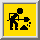

When started, X!Family opens one window, showing the currently loaded tree (if any). If no tree was loaded, the window will be blank.
 At the moment, it is not clear whether there will be a "master window" in which all views of all trees loaded will be listed. If that turns out to be the cleanest way of handling multiple trees, then it is this window that you will see when the program is started with no tree loaded. However, at present, the program automatically loads a tree on startup and this is what you will see.
The tree displayed is based on the concept of "the current person", and the current person is recorded whenever a file is saved from the program. The tree will ideally show the current person, his parents, siblings, and all descendants. If he exists in the database, the person at the "top" of the tree will be the current person's father. Failing that, it will be his mother, and if neither of these exist in the database, it will be the current person him- or herself. The title bar of the window shows the name of the GEDCOM file and the name of the current person.
If you left-click on a person, then that person will become the new current person, and the tree is redisplayed based on that person. So that as long as the current person has one or both parents in the database, you can keep on clicking on the top person to go back a generation. This soon makes the tree too big for the screen, and the window becomes scrollable to see all the people on display.
The display shows males in blue, females in red, and those whose gender is unknown in green. With the default options set, under each person will be a pair of dates representing birth and death. If a birth date is unknown, it is marked "?", but if a death date is unknown, it is simply left blank. The person may be still alive !
Husband and wife are shown one above the other, with at least an equals sign between them. If a marriage date is known (and the option to display these dates is set) then that date will be shown next to the equals sign. For multiple marriages by one person, each marriage is marked by either a date, or, if this is not known, or not being shown, then a sequence number.
If a person's spouse is unknown, but they have descendants, the equals sign is still shown, but there is a gap where the spouse would be. Below each married couple, their descendants are shown, linked by lines in the conventional manner. If the descendants are married, the process is repeated down to the most recent known issue.
If you right-click on a person shown on the tree, a small menu will pop up with the person's name as the title. The top two items, "Edit" and "Notes" open additional windows. "Edit" opens a tabbed dbox which enables you to edit the person's event details (Birth, Christening, Baptism, Death, Cremation, Burial) - see Edit Person Dbox for full details. "Notes" open a small text-editor window containing free-text notes about the person which can be edited, or cut-and-pasted to other applications.
The next group of items "Marry", "Older", "Child" and "Remove" are for manipulating the structure of the tree.
The final item on the pop-up menu is "Reports" which opens a submenu listing possible reports you can generate based on the person you clicked on. Currently the only item on this submenu is "Ancestors". It is intended that clicking this will generate a condensed ahnentafel showing all known direct ancestors of this person, and then prompt for a place to save the file. Currently, however, the code to do this is not yet implemented.
If you right-click on the equals sign, date or sequence number of a marriage, a small menu will pop up showing the id-number of the FAM object as title. [Aside: if you don't know the internals of GEDCOM files, think of this number as just a unique identifier for a particular family. To know more about the GEDCOM, see Appendix B.]
The first two items on this menu, "Edit" and "Notes" fulfill similar fucntions to the items of the same name on the Person menu. "Edit" opens a tabbed dbox which enables you to edit the event details associated with the family (currently Engagement, Marriage and Divorce) - see Family Events Dbox for full details. "Notes" open a small text-editor window containing free-text notes about the family which can be edited, or cut-and-pasted to other applications.
The second group of menu items "Earlier", "Unmarry" and "Child" are again for manipulating the structure of the tree.